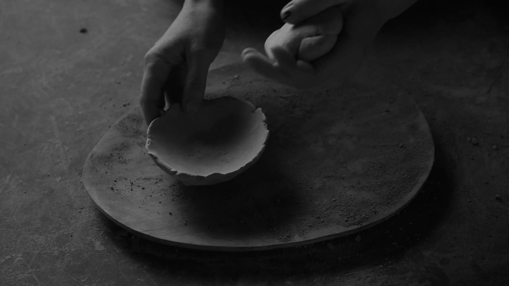
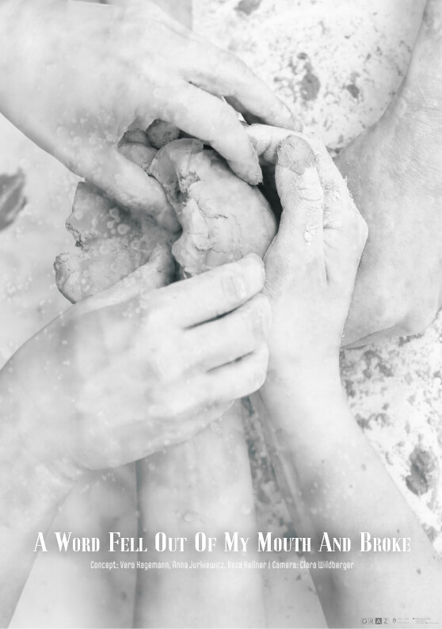

A video-performance experiment on the cycle of transforming matter, working with performer Vera Hagemann. An important source of inspiration was the multi-sensory cinematography of Sergei Paradjanov (The Colour of Pomegranates).

The work embodies the logic of a cycle that has no beginning and no end — the never-stopping metabolism and circulation of matter, using elements of photography, performance and music.
Constantly changing states, the clay reinvents itself: it works, rests, breathes, absorbs water and releases air, becoming an object and returning to dust or mud. Impatient hands intervene to speed up and alter those processes, playful and ritually solemn at the same time, busy with enacting the endless cycle of doing and undoing. Three performers explore ways of recycling the matter from unburnt clay objects. The pragmatic practice of working clay turns into a sensual experience driven by tactile intelligence and spontaneous invention of ritualistic movements. Human hands, dust, mud — clay at various stages of watering and desiccation — are equal protagonists of the film.
A hypnotizing haptic feast of textures on one hand, a repetitive set of conventional gestures on the other: both aspects come together in the perpetual forming and deforming of vessels and words. The film asks until which point it is possible to use and reuse the same material, form, gesture and meaning.
We started with clay waste from workshops for children given by ceramic artist Selma Etareri. This debris in different shapes can be retrieved and used again as clay, after soaking or mixing with water. We chose an organic, intuitive and purposely inefficient way of reusing clay: crushing objects with a stone has a ritual character and is rich in symbolic meanings.
The analogy between making new clay objects out of dust obtained from old ones and forming words, concepts and structures always with reference to earlier ones points to the fact that language and our ways of thinking happen in a relentless cycle, just the same as the circulation of water in the environment. Used material is the only material we can ever get. Destroying existing forms is the only way to make space for new forms, so needed.
Duration
09:09
Concept
Vera Hagemann, Anna Jurkiewicz, Reza Kellner
Direction and production
Reza Kellner, Anna Jurkiewicz
Performance
Vera Hagemann, Anna Jurkiewicz, Reza Kellner
Camera
Clara Wildberger
Microscopic footage
Anna Jurkiewicz
Editing and postproduction
Reza Kellner
Sound design
Reza Kellner, Anna Jurkiewicz
Premiere
Pebbles Underground 2023
Canada
Supported by
Kulturamt Stadt Graz
Land Steiermark
Special thanks
Forum Stadtpark
